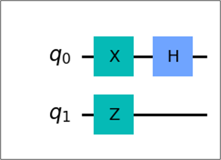
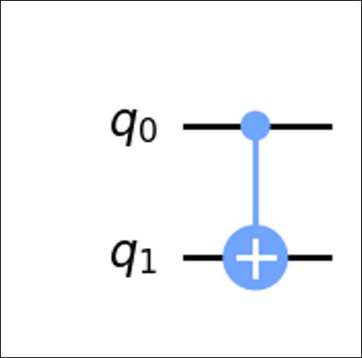

5. Introduction to Quantum Computing#
5.1. Quantum Gates#
Quantum logic gates or quantum gates are the quantum computing equivalents of the classical logic gates in classic computing. Similar to classical logic gates manipulating bits, quantum gates are used to manipulate qubits. These are the components used for creating quantum circuits.
Mathematically speaking, a quantum gate transforms the quantum state of a qubit into another quantum state. For general quantum gates, we use \(U\).
5.1.1. Properties of Quantum Gates#
Linear property
Probability must be equal to 1
5.2. One Qubit Quantum Gates#
5.2.1. Identity Gate#
This gate preserves the quantum state
5.2.2. Pauli X Gate#
Also known as X, NOT, or \(\sigma_x\). This performs a bit flip on the quantum state via a 180 degree rotation along the x-axis.
5.2.3. Pauli Y Gate#
Also known as Y, or \(\sigma_y\). This performs a bit flip and phase flip on the quantum state via a 180 degree rotation along the y-axis.
5.2.4. Pauli Z Gate#
Also known as Z, or \(\sigma_z\). This performs a phase flip on the quantum state via a 180 degree rotation along the z-axis.
5.2.5. Hadamard Gate#
Also known as H. This puts the qubit into a superposition.
There are other single qubit gates such as 𝑆, 𝑇, 𝑅𝑋, 𝑅𝑌, 𝑅𝑍, 𝑈 etc. which all manipulate the qubit state by rotating.
In a quantum circuit, gates are usually shown as boxes with their respective labels.
5.3. Sample calculation#
Verify \(H|0\rangle = \frac{1}{\sqrt{2}}(|0\rangle + |1\rangle)\).
5.3.1. Gates in series#
Multiple single gates Try solving without calculating
We are expecting to get \(|-\rangle\). Now try calculating the matrices. We calculate the result of many single qubit gates via matrix multiplication. We call operations of gates in succession gates in series.
5.3.2. Gates in parallel#
Gates in parallel is seen when calculating gates between multiple qubits. The primary operation is called the tensor product.
Let us consider two qubits both initially in \(|0\rangle\). The initial state of the whole system is determined via the tensor product.
5.4. Quantum Circuit Model#
5.4.1. Circuit diagram#
Sequence of quantum gates applied to the qubits. This is the quantum equivalent of a classical circuit.
Suppose a qubit \(q\), and we want to apply gates \(X\) then \(Z\) then \(H\), i.e. \(HZX|q\rangle\). The equivalent quantum circuit is as follows.

Notice that the circuit diagram is “written backwards” compared to its mathematical expression.
We can see that there are different components of a quantum circuit. First is the input qubit \(q\), usually initialized as \(|0\rangle\). This is the qubit in which we perform our calculations on.
Seconds is the quantum wire, the horizontal line seen in the figure. This dictates the flow of the which goes from left to right.
Lastly, the quantum gates. As shown are the boxes with their respective labels corresponding to their operation.
5.4.2. Circuit diagram, multiple qubits#

For multiple qubits, we label the qubits as \(q_n\) where \(n\) is the nth qubit.
We can separate these via its timesteps. We see that \(q_0, q_1\) is the initial state or \(t_0\). After one timestep, we apply \(X \otimes Z\). And for the last timestep, we apply \(H\). The equivalent mathematical expression of the circuit above is
However, notice that \(X\otimes Z\) is a \(4 \times 4\) matrix and \(H\) is a \(2 \times 2\) matrix. We cannot multiply such matrices. How do we fix this?
Notice that below the \(H\) gate, there is a blank space. This is actually the representation of the identity gate. Thus, the expression becomes,
Now assuming an initial state of \(|00\rangle\), we get a final state of
5.5. Multi-qubit gates#
These are quantum gates that act on multiple qubits simultaneously. Here, we introduce two qubit gates.
An example of this is the Controlled-NOT gate(CNOT, CX). This gate acts on two qubits, named the control qubit and the target qubit.
This gate performs an if-else like operation. The output of the target qubit is dependent on the control qubit.
5.5.1. CNOT gate#
The control qubit is denoted as a small dot, the target qubit is denoted by an \(X\) gate. The line implies the control.

If control is \(|0\rangle\), do nothing to target.
If control is \(|1\rangle\), apply \(X\) gate to target.
CNOT gate in matrix form
CNOT gate in outer product form
There are numerous other multi-qubits gates such as CY, CZ, Controlled Phase, etc. for 2 qubits.
Toffoli or CCNOT for 3 qubits
5.6. Application#
5.6.1. Bell state entanglement#
A quantum state $\( |\psi\rangle = \begin{bmatrix} a\\ b\\ c\\ d \end{bmatrix} \)$
is separable/not entangled if and only if
This means that we can separate or factor a quantum state into its basis states. Consider the quantum state
We can see that it satisfies
Let’s try to separate them
How about the following state? Can we separate the state?
We find a state that could satisfy
We can see that
If we set at least one coefficient to 0, then we won’t be able to get \(\frac{1}{\sqrt{2}}\). Thus, the state is entangled. This specific state \(|\Phi^+\rangle\) is called a Bell state.
5.6.2. Circuit form of a Bell state#
Notice the states in \(|\Phi^+\rangle\). There are two qubits \((|00\rangle, |11\rangle)\). Thus, we will need \(q_0, q_1\).
Now, notice that we have a superposition of two states. We will use a Hadamard gate.
Since we know that the state is entangled, we need an operation that entangles the two qubits. This operation will be the CNOT gate.
The Bell state circuit is then

6. References#
McMahon, D. (2007). Quantum Computing explained. Wiley-IEEE Computer Society Press.
Nielsen, M. A., & Chuang, I. L. (2010). Quantum computation and quantum information: 10th Anniversary Edition. Cambridge University Press.
Wong, T. (2022). Introduction to classical and quantum computing.